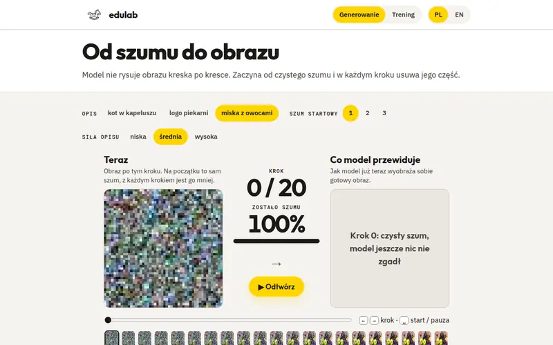
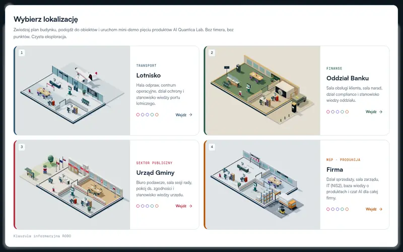
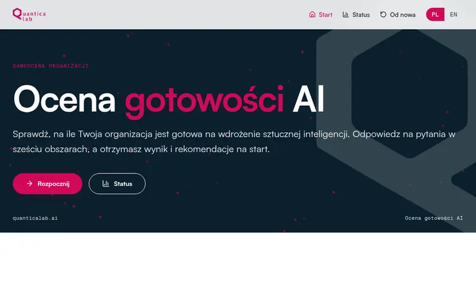
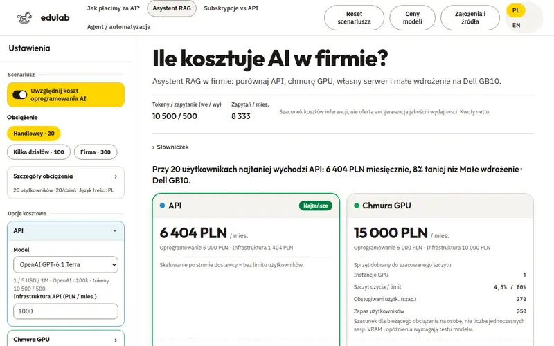
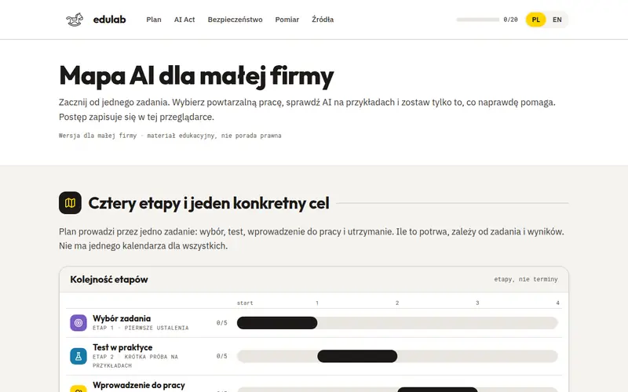
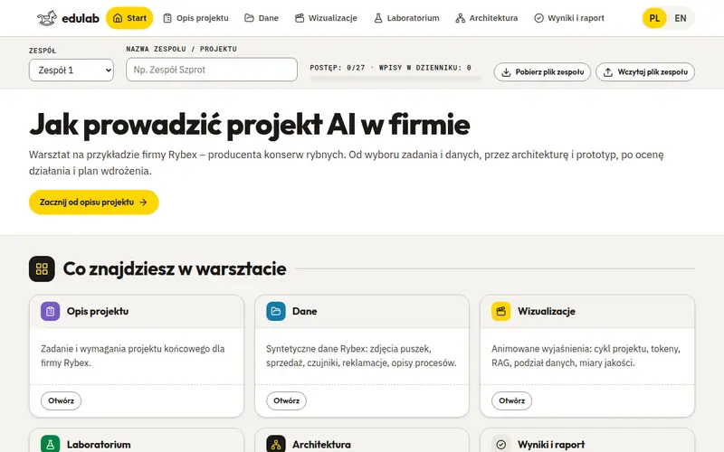
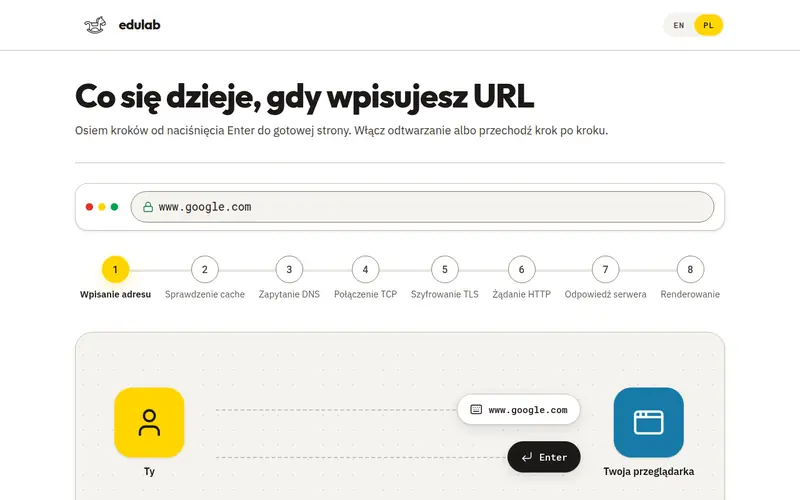

![edulab]()
W przeglądarce
Demo otwierasz jak zwykłą stronę. Nie instalujesz żadnych programów.
Demo otwierasz jak zwykłą stronę. Nie instalujesz żadnych programów.
Część dem uruchamia model AI lokalnie. Potrzebują przeglądarki z WebGPU, na przykład Chrome lub Edge.
Z części dem korzystamy razem na zajęciach. Pozostałe są dla chętnych, do samodzielnego odkrywania.

Jak model uczy się z danych, jak powstaje obraz z szumu, jak model językowy pisze tekst token po tokenie i czym różni się zwykły czat od RAG i agenta.

Konkretne zastosowania AI w miejscach, które znasz: lotnisko, bank, urząd, firma. Wybierasz jedno zadanie, które przeprowadzisz przez kolejne części.

Oceniasz wybraną organizację w aplikacji, a potem sprawdzasz, co mówią o niej przepisy i bezpieczeństwo.

Liczysz miesięczny koszt asystenta AI i sprawdzasz, od czego zależy rachunek: liczby tokenów, wyboru modelu i miejsca, w którym model działa.

Kończysz tę część z własną mapą wdrożenia: od jednego zadania do decyzji, czy kontynuować.

Fikcyjny producent konserw rybnych. W zespole budujecie projekt AI od briefu przez dane, eksperymenty i architekturę do raportu.

Liczby dwójkowe, pliki, strony WWW, API i kod. Przydaje się, gdy budujesz własną aplikację z pomocą AI.
Komputer i dane · Internet i WWW · Dane i narzędzia